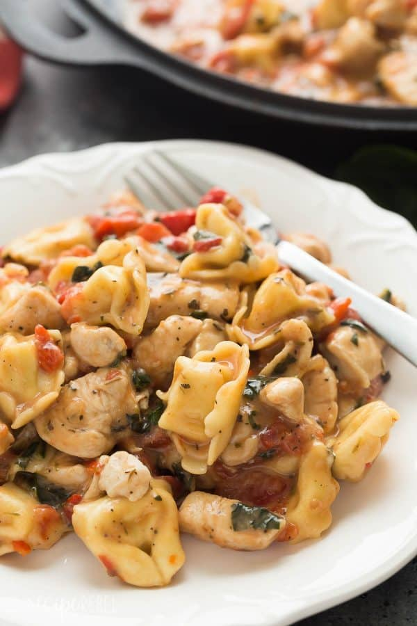
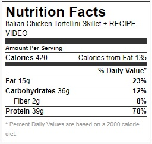

Italian Chicken Tortellini Skillet
Table of contents:
This Italian Chicken Tortellini Skillet is an en easy meal made completely in one pot — loaded with roasted red peppers, spinach, tomatoes, herbs and cheese!
Tortellini isn’t something I buy often (or really ever, for that matter). It’s not that I don’t enjoy tortellini, it’s probably because I enjoy it a little too much, if you know what I mean.
Those delicate, cheese-stuffed pillows of pasta are completely irresistible but not so light on the calorie side of things, so I usually stick to whole grain, whole wheat or high fiber pasta of another sort.
But I passed the frozen aisle in the grocery store a while back and there was a great deal on a 1kg bag of frozen cheese tortellini, and I thought, “what the heck?”
And I just wanted to make something classic, and boring, and seriously delicious but moderately healthy. So I used chicken broth and milk to make my sauce and loaded it up with chicken, tomatoes, spinach and roasted red peppers, and stirred in a just enough cheese because, well — cheese.
Please note: no real Italians are buying tortellini from the frozen section of my grocery store. This is my interpretation of Italian flavors, and this is my blog so I’m the boss 🙂
Ingredients
- 1 tablespoon canola or olive oil
- 3 small boneless skinless chicken breasts diced
- 1 teaspoon dried thyme
- 1 teaspoon dried basil
- 1 teaspoon dried oregano
- 1 teaspoon minced garlic
- 1 14 oz can diced tomatoes with liquid
- 1 cup finely chopped spinach
- 1 cup roasted red peppers chopped
- 1/4 cup chicken broth
- 2 teaspoons corn starch
- 1/2 cup milk
- 2 cups frozen cheese tortellini
- 1 cup shredded mozzarella
Instructions
- In a large skillet, heat oil over medium high heat. Add chicken and cook until browned, 2-3 minutes.
- Add thyme, basil, oregano and garlic and cook 1 minute.
- Add tomatoes, spinach, roasted red peppers -- stir and cook 2-3 minutes.
- In a small bowl, whisk together broth and corn starch. Add to the pan along with the milk and tortellini and cook over medium heat until thickened and tortellini is warmed through -- about 4-5 minutes. Stir in cheese. 
Notes
*You can use fresh tortellini, but you will likely need to cut back on the corn starch as it won't release the same amount of liquid*Please note: nutrition information is calculated with My Fitness Pal and is an estimate only.
Nutrition (this is an estimate)

Download menu
Please click here to download the recipe